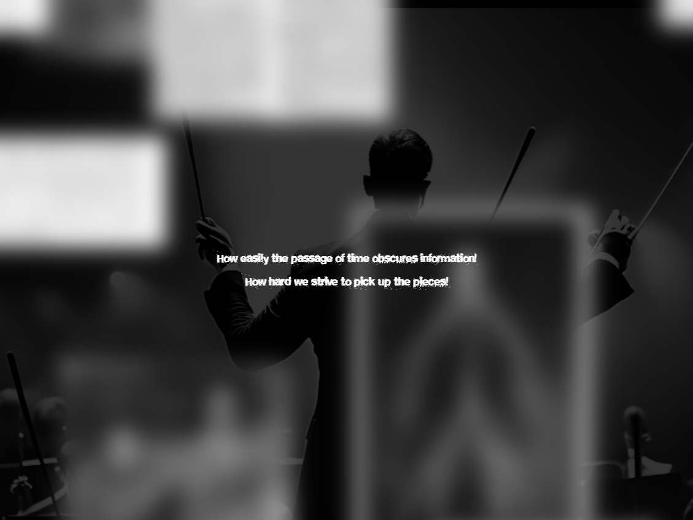

Fugue for a Specimen
November 2024
Fugue for a Specimen is a nonlinear narrative of the lives and afterlives of Henrietta Lacks and Harriet Cole, two Black women whose bodily contributions to the American medical system were systemically exploited and erased from most of history. I wove their two stories together with the metaphor of a fugue, using both the psychological and musical definitions of the term. The project brings visibility to the intersectional abuse of Black women in much of history for the sake of "progress."
I built the site using Glitch.com, now defunct. This is the first website I ever coded from scratch. You can view an archived version on my Github.
Below is documentation of the original site:
